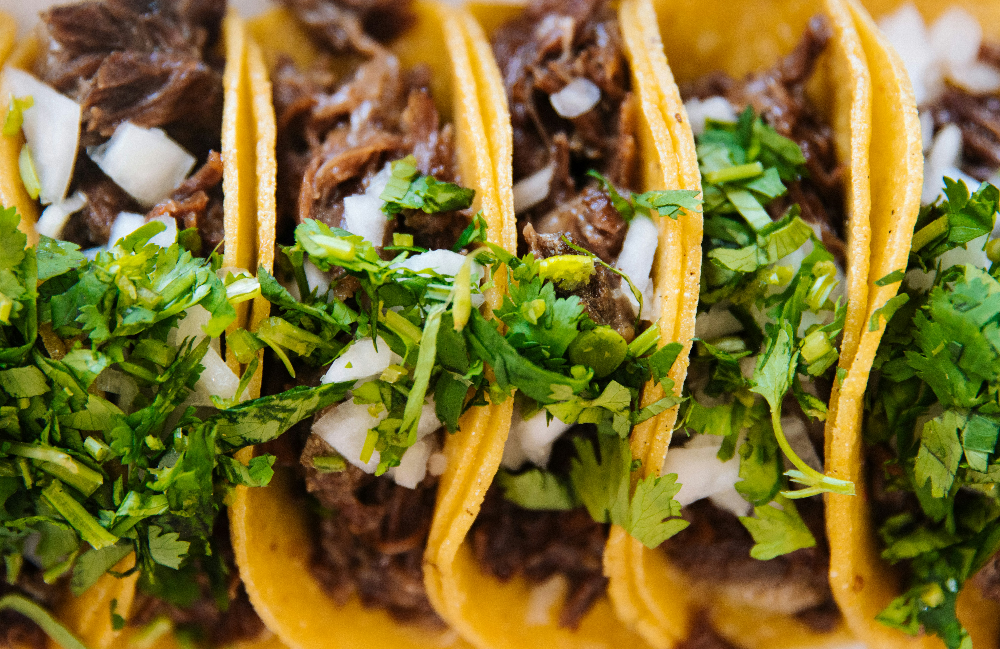

Birria Taco Recipe

IT'S TACO TIME!!!!! There's nothing better than Birria
tacos. The consommé in this recipe will have everyone coming back.
What you will need:
- 1.5 kg beef chuck roast, cut into
2-3 inch chunks
- 20g kosher salt
- 45g oil
- 30g guaillo chiles, about 10.
- 30 g Ancho chiles, abut 6
- 675g water
- 175g white onion, rough chopped
- 25g garlic
- 875g beef stock
- 20g tomato paste
- 1 large chipotle chile in adobo
- 35g acholote annatto paste
- 2g cumin
- 2g coriander
- 2g cinnamon
- 3g black pepper
- 1/8 tsp ground cloves
- 1g dried oregano
- 20g apple cider vinegar
- 10g kosher salt
- 20g agave syrup
- 200g braising adobo sauce
- 300g beef stock
- half a teaspoon beef boullion
- corn tortillas
- chihuahua cheese
- One finely chopped red onion
- A bushel of cilantro, finely chopped.
Instructions
- Cut beef roast into 2-3
inch chunks. Combine beef with 20g
salt and 45g oil, tossing to coat evenly.
Rest 20 minutes.
- Remove stems and seeds from dried chiles,
tearing into pieces. Toast in a pot over medium-low
heat for 2-3 minutes until fragrant. Add 675g water,
onion, and garlic to the pot. Bring to a low simmer.
Cover and simmer gently for around 10 minutes.
- Drain cooking water, then transfer the softened
mixture to a blender. Add 675g beef stock, tomato paste,
chipotle chiles, achiote paste, cumin, coriander,
cinnamon, pepper, cloves, oregano, apple cider vinegar,
salt, and agave to the blender. Blend until smooth.
- Broil beef chunks on high for 15 minutes until well
browned. Deglaze pan with remaining 200g beef stock;
scrape up fond and add to pot along with beef
and adobo puree.
- Bring to a simmer on the stovetop then cover,
and braise in a 300°F/150°C oven for 2 hours.
Check beef tenderness. It should have some give,
but not be falling apart. If ready, rest 30 minutes covered.
Shred gently by hand into chunks.
- For consommé, mix 200g braising adobo with 300g beef stock
and bouillon. Heat to dissolve. Add red onion and cilantro.
Brush corn tortillas lightly
with braising adobo sauce on both sides.
- In a nonstick pan over medium-low heat, fry tortillas in oil.
Top half of each tortilla with cheese and 3oz/100g shredded beef.
Fold over and fry 4-5 minutes per side over med-low until crispy and browned.
- Rest briefly on a wire rack. Serve quesabirria tacos with hot consommé for dipping.
Home